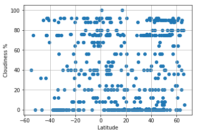
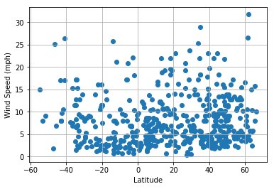
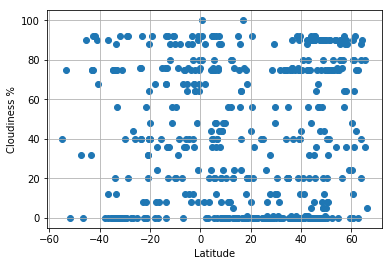
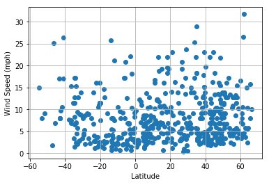

The purpose of this project was to analyze how wather changes as you get closer to equator. To accompalish this analysis we first pulled data from "Openweather" API to assemble dataset on over 500 cities.
After assembling the dataset , we used the Matplotlib to plot various aspects of weather vs latitude. Factors we looked at included : temperature, cloudiness, windspeed and humidity. this site provides the source data and visualizations created as part of the analysis , as well as explanations and descriptions of any trends and correlations witnessed.
 


